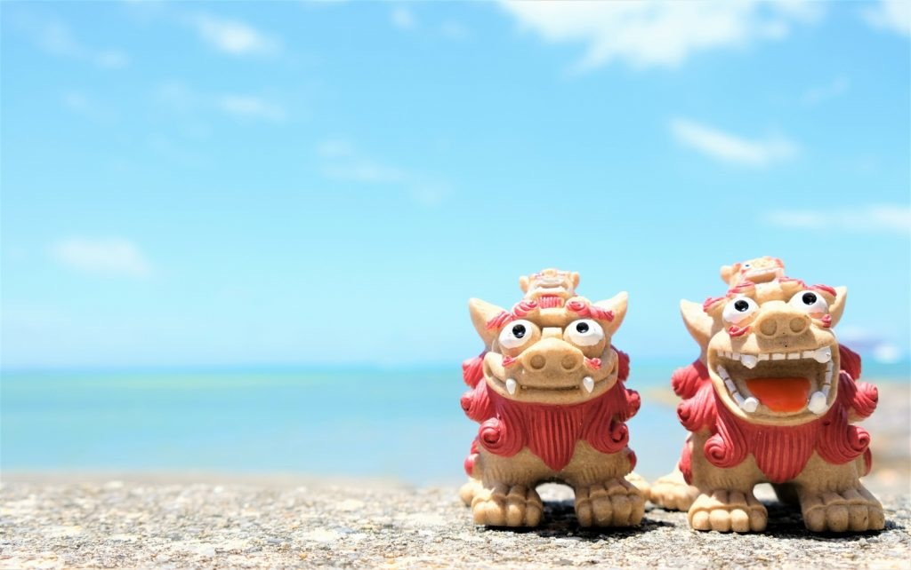
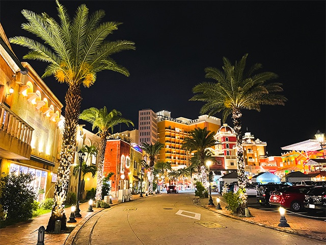
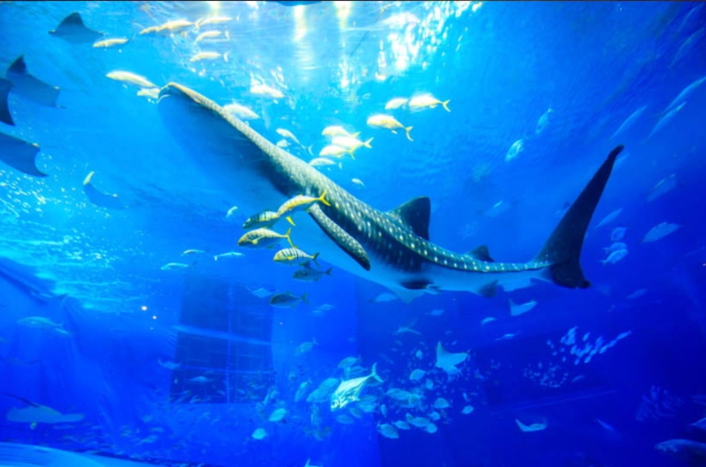
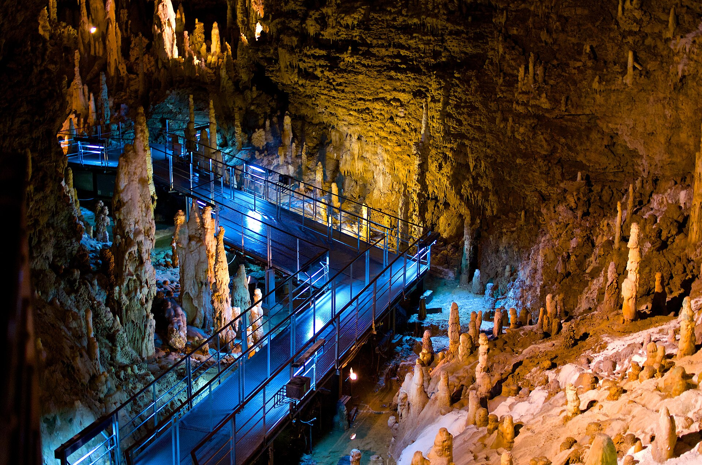
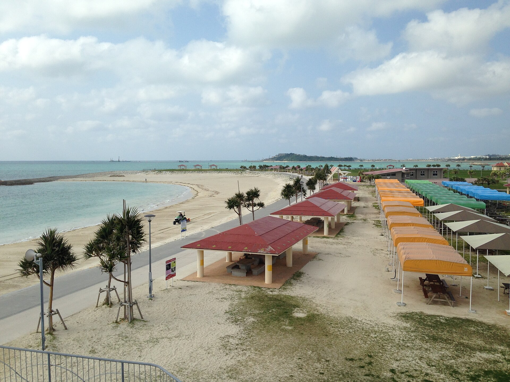
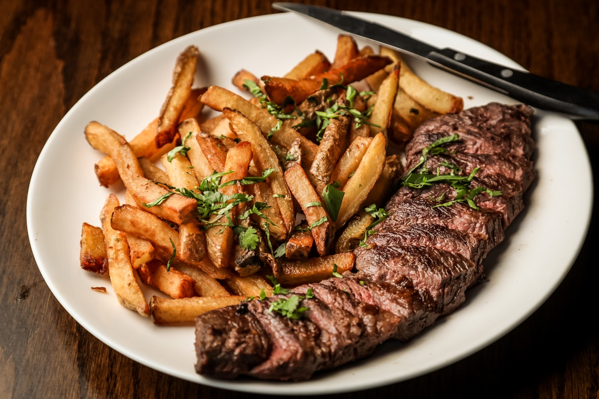
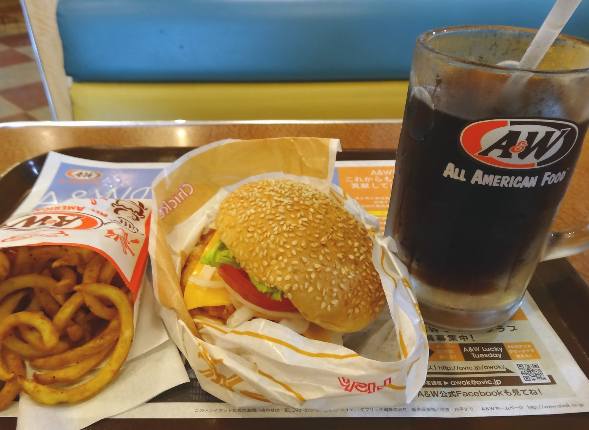
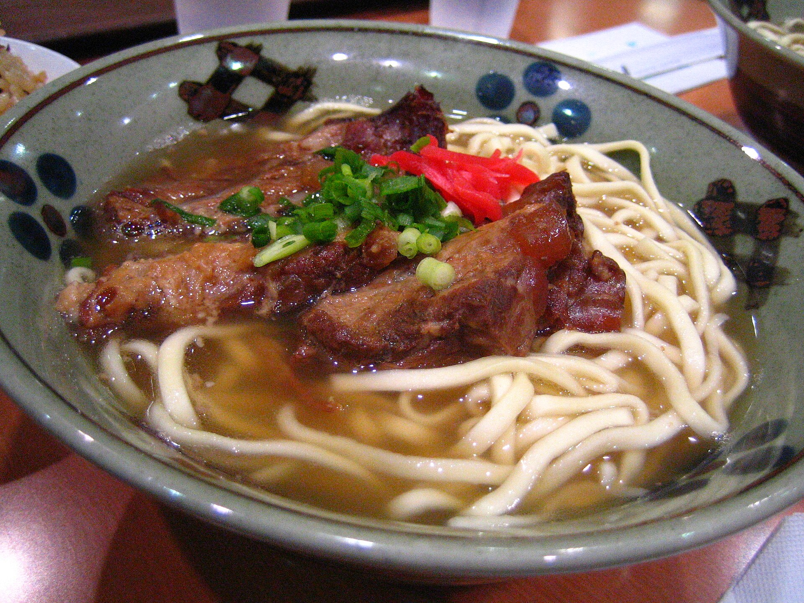
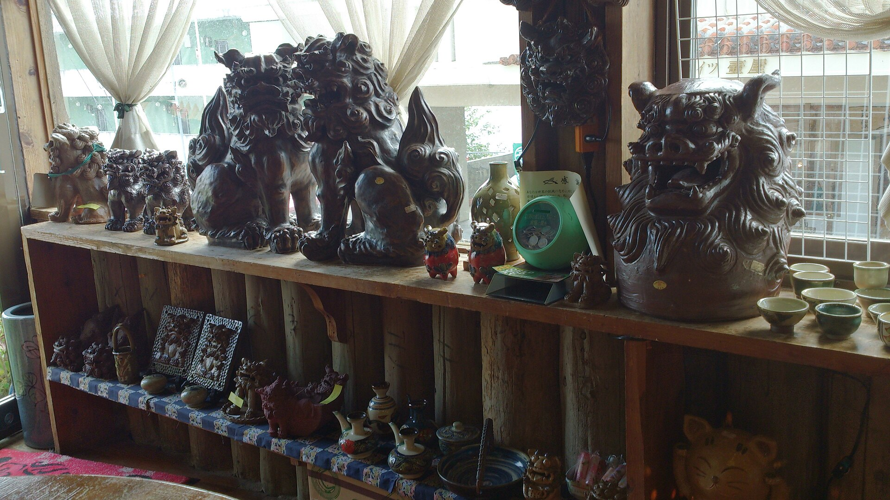

京成バス 幕張ベイタウン → 成田T3
本線はベイタウン12:39発 → T3 13:32着。大人1,200円・小児600円。予約不可。行きは車内でIC／現金。1本逃すと13:59発（T3 14:52）で、預け荷物がある日は賭けない。
公式時刻表は京成バス 稲毛海岸・海浜幕張〜成田空港。東関東道の土曜昼は遅れやすい。

海も、洞窟も、ネオンの夜も。
姉妹ふたりと見つける、4つの「はじめて」。




往路 PNR XLKDQV、復路 PNR CR8DPA。
幕張ベイタウンから成田T3へ。着いたらホテルは後回しにして、歩いて楽しい北谷・美浜で夜ごはん。観覧車は2022年になくなっています。
本線はベイタウン12:39発 → T3 13:32着。大人1,200円・小児600円。予約不可。行きは車内でIC／現金。1本逃すと13:59発（T3 14:52）で、預け荷物がある日は賭けない。
PNR XLKDQV。国内線は預け・チェックインが出発30分前、ゲート15分前。家族＋荷物なら90〜120分前にターミナルへ。預けは15:20、ゲート15:35が目安。
那覇空港 → 送迎 約5分
横断歩道の先の⑪-Bで「アネックス」と声かけ。送迎約5分。那覇市安次嶺14-5。19:00着便なので預けが出たらすぐ⑪-Bへ。遅れたら店へ電話。
オリックス発 → 車 約35–45分 ／ 北谷→ホテル 車 約20分
ホテルは飛ばして北谷へ。着は店次第で20:30–21:30。ショップとライト、隣のサンセットビーチ。旧観覧車跡はホテルになっているので、目印は桑江交差点とデポアイランドで十分。

本線。at's chatan 2F。L.O. 22:00。子どもメニューあり。

逃げ。土日 8:00–24:00。バーガーとルートビアフロート。

ビーチタワー。夕食 L.O. 22:00。そば・炭火焼・三線ライブ。無休。案内
デポセントラルB1。L.O. 21:00。到着が遅い日は使わない。月曜定休。案内

デポセントラル2F。17:00–23:00。座敷・掘りごたつ。子連れ向き。案内
本線は日曜に海・月曜に洞窟（9/7時点の恩納村予報：日曜は降水10%、月曜は50%）。海は波と風で欠航しやすいので、月曜朝に逆転するときだけ押してください。
午前はかりゆしビーチのシーウォーク。昼は許田、午後はパラセーリングとラテを挟んで、美ら海は16時入り。
ホテル 8:00発 → 車 約45–55分
かりゆしビーチ（名護市喜瀬1996）。ヘルメット型で顔が濡れず、泳げなくてもOK。所要60–90分、水中は約15分。11:00前後終了。5歳は店側が予約OK済み。
かりゆし 11:10発 → 車 約8–12分
ランチ確定。名護市許田1672。開店10:30、L.O. 18:00。そば・ステーキ・タコス・天ぷら。かりゆしから南へ約8–12分。ビーチ目の前に町食堂はないので、ここが手軽さの本線。
許田 12:20発 → 車 約10–15分
喜瀬115-2・コートヤード1F。所要約90分、飛行約10分、高度40–50m。基本2人乗り。満5歳・身長120cm以上・体重20–120kg。
喜瀬 14:30発 → 車 約30–40分
喜瀬から約30–40分。目の前で黒糖を削る生黒糖ラテが看板。テイクアウト中心。公式：thesinmay.com
Sinmay 15:40発 → 車 約15–20分 ／ 美ら海 18:00発 → ホテル 車 約90–120分
世界最大級の水槽「黒潮の海」。16時入りなので、先に黒潮の海を見る。9月は8:30–18:30、入館締切17:30。
開園と同時に玉泉洞へ。12:30のエイサーを見てから国際通りでお土産と市場、そのあと瀬長島で夕景。
ホテル 8:00発 → 車 約50–65分
日本有数の鍾乳洞を歩いて探検。洞内は一年中ひんやり。開園9:00、17:30閉園。先に玉泉洞、王国村を回して12:15にエイサー広場。公式のスーパーエイサーは10:30／12:30／14:30、各約30分。本線は12:30回。
玉泉洞 13:15発 → 車 約30–40分
お土産と市場の匂いをここで取る。滞在は約1時間。紅いもタルト、ちんすこう、シーサー小物は十分揃う。ウミカジは多少遅れてもよいので、15:10には車へ。
国際通り 15:10発 → 車 約20–30分 ／ 瀬長島 17:40発 → ホテル 車 約40–50分
白い段々の街並みが「日本のアマルフィ」と呼ばれるフォトスポット。夕陽と飛行機雲を見ながら、ソフトや買い物で余韻を。
返却はアネックス12:00。朝の空きは琉球ガラス村が候補。決めたら13:15便と17:25のバスを守る。

ドレスダイナー 7:00–10:30。8:30チェックアウト。ガラス村に行くなら小禄で先に給油。国際通りは3日目に済んでいる。
ホテル 8:30発 → 車 約50–65分（小禄で給油） ／ ガラス村 11:10発 → 車 約20–30分
ガラス村に行くなら 11:10発 → 車 約20–30分 ／ 行かないならホテル 8:30発でも11:45前着
PNR CR8DPA。那覇 13:15 → 成田T3 15:55。那覇市安次嶺14-5。送迎約5分で国内線へ。ホテルの12:00発シャトルは間に合わない。
本線は T3 17:25発 → ベイタウン 18:35着。帰りは空港で切符を買ってから並ぶ（車内精算ではない）。のりばは 1F 10番（到着ロビーと同じ階）。